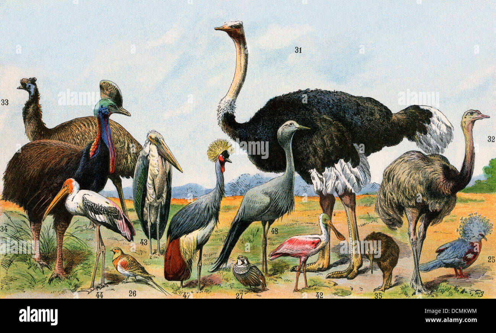

Las aves corredoras son aquellas que se caracterizan por su habilidad para correr en lugar de volar. Estas aves tienen alas pequeñas y fuertes patas adaptadas para la carrera, lo que les permite moverse rápidamente por el suelo. Aunque son conocidas principalmente por su capacidad para correr, algunas especies también pueden volar en distancias cortas.
En este grupo se encuentran las aves más grandes.

Habitat:
El habitat de las aves corredoras es un aspecto fundamental para su supervivencia y bienestar. Estas aves, también conocidas como «runners», habitan en diversos tipos de terrenos, desde regiones desérticas hasta bosques húmedos.
Además, estas aves requieren refugio para escapar de los depredadores y protegerse de las inclemencias del clima. Los arbustos y los árboles son excelentes lugares para que las aves corredoras construyan sus nidos y se escondan.
Como es su nido:
Las aves corredoras construyen nidos pequeños y sencillos, generalmente hechos de hierba o ramitas. Estos nidos son lo suficientemente pequeños como para proteger a los polluelos de los elementos climáticos y los depredadores, pero lo suficientemente grandes como para permitir que la madre entre y salga fácilmente.